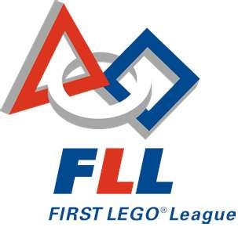

|  |
|
MissionIntroduces younger students to real-world engineering challenges by building LEGO-based robots to complete tasks on a thematic playing surface. FLL teams, guided by their imaginations and adult coaches, discover exciting career possibilities and, through the process, learn to make positive contributions to society. |